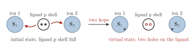
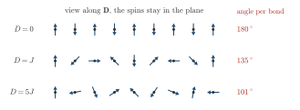
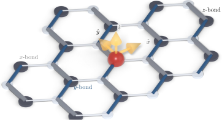

Page 7 of 11 of this session
6.11 Superexchange as the origin of ferromagnetic coupling
If the direct mechanism between two magnetic sites is always antiferromagnetic, where do ferromagnets come from, and which other couplings appear with spin-orbit coupling? We will now see that a second virtual process, through an atom between the two magnetic ions, can give a ferromagnetic coupling. Then we will see that spin-orbit coupling allows the Dzyaloshinskii-Moriya, Ising and Kitaev terms, and that the first of them turns an antiferromagnetic chain into a spiral.
\[H_\text{Heis} = \sum_{\langle ij\rangle} J_{ij}\, \mathbf S_i\cdot\mathbf S_j, \qquad J_{ij} = \frac{4t_{ij}^2}{U}. \tag{6.5}\]
This is the Heisenberg model of Section 6.9, which a single-orbital Hubbard model gives for \(U\gg t_{ij}\). Each bond is counted once, and \(J_{ij}>0\) is antiferromagnetic. Here \(J_{ij}=4t_{ij}^2/U\) is always positive.
The direct \(t^2/U\) mechanism of Section 6.9 is always antiferromagnetic, but many real magnetic materials are ferromagnets. So a ferromagnetic coupling needs a different microscopic mechanism, and it usually requires an intermediate atom, called a ligand, between the two magnetic ions, instead of a single direct hop. Let us take two transition-metal ions, for example cobalt, iron or nickel, connected by a ligand such as oxygen. As before, electrons can hop directly between the two metal sites, and this channel is antiferromagnetic as in Section 6.9. However, there is a second virtual process.
An electron hops from the ligand onto one metal ion, and another electron hops from the ligand onto the other one. The two electrons are now on the metal ions, and this leaves a virtual state with two holes in the \(p\) shell of the ligand, which was full before. The energy correction from this virtual channel, with two holes on the ligand, depends on which \(d\) orbitals take part and on the metal-ligand-metal bond angle. It can favor the ferromagnetic configuration over the antiferromagnetic one, and in this way it changes the net sign of the effective coupling.
The systematic version of this argument is given by the Goodenough-Kanamori rules, which predict the sign of the exchange coupling from the orbital filling and the bond geometry. These rules can also be derived systematically from self-consistent multi-orbital calculations, for instance with density functional theory. There is no notebook exercise for this mechanism, since the exercises of the notebook stay within the single-orbital Hubbard model.


6.12 Anisotropic exchange with Dzyaloshinskii-Moriya, Ising and Kitaev terms
In (6.5) we assumed that the coupling is an isotropic scalar product, \(\mathbf S_i\cdot\mathbf S_j\), which is what the rotational spin symmetry requires when there is no spin-orbit coupling. Once spin-orbit coupling is included in the underlying electronic Hamiltonian, other spin couplings with lower symmetry become allowed. Three of them appear often in real materials, and we list them now.
Antisymmetric, or Dzyaloshinskii-Moriya, exchange, \[H_\text{DM} = \sum_{\langle ij\rangle} \mathbf D_{ij}\cdot\big(\mathbf S_i\times\mathbf S_j\big),\] which is a cross product and not a dot product. It requires a bond with no inversion center, which is the reason why it is strong at surfaces and interfaces, where the substrate itself breaks the inversion symmetry. It favors neighboring spins rotated by roughly \(90^\circ\) with respect to each other, so it favors noncollinear order, which is often a spiral. We see in Schematic 6.9 how the angle between neighbors depends on the strength of the term.
A chain has the Heisenberg coupling \(J>0\) and the Dzyaloshinskii-Moriya term with \(\mathbf D=D\hat z\) on every bond. Its classical spins then lie in the plane normal to \(\hat z\), and they turn by the same angle \(\theta\) from site to site, with
\[\cos\theta=-\frac{J}{\sqrt{J^2+D^2}}.\]
The term needs spin-orbit coupling, and it turns the collinear antiferromagnet into a spiral.
The steps The angle of the spiral
Let us take two classical spins of length \(S\) in the plane normal to \(\hat z\), where the cross product has its largest component along \(\hat z\). We call \(\theta\) the angle from \(\mathbf S_i\) to \(\mathbf S_j\), counted counterclockwise seen from \(+z\). Then \(\mathbf S_i\cdot\mathbf S_j=S^2\cos\theta\) and \(\hat z\cdot(\mathbf S_i\times\mathbf S_j)=S^2\sin\theta\), so the bond has the energy
\[E(\theta)=S^2\big(J\cos\theta+D\sin\theta\big).\]
The simplest case is \(D=0\), where the minimum is at \(\theta=180^\circ\), the antiparallel pair of (6.5). For \(D\neq0\) we write \(J\cos\theta+D\sin\theta=\sqrt{J^2+D^2}\,\cos(\theta-\varphi)\), with \(\cos\varphi=J/\sqrt{J^2+D^2}\) and \(\sin\varphi=D/\sqrt{J^2+D^2}\). The minimum is at \(\theta=\varphi+180^\circ\), so
\[\cos\theta=-\frac{J}{\sqrt{J^2+D^2}},\qquad \sin\theta=-\frac{D}{\sqrt{J^2+D^2}},\qquad E=-S^2\sqrt{J^2+D^2}.\]
For \(D>0\) the sine is negative, so seen from \(+z\) each spin is turned clockwise from the one before it. On a chain every bond has the same \(J\) and \(\mathbf D\), so one angle minimizes all the bonds at the same time, and the chain is a spiral with no frustration. The angle between neighbors is \(135^\circ\) for \(D=J\) and \(101^\circ\) for \(D=5J\), and it goes to \(90^\circ\) when \(D\gg J\).

Anisotropic, or Ising-like, exchange, which is a coupling of a single component such as \(\Lambda\, S_i^z S_j^z\). It favors an easy axis, or an easy plane for the opposite sign, which means that the system magnetizes more easily along one direction than along another.
Kitaev interaction, which is a coupling that depends on the bond, on a lattice of honeycomb type. It has an \(S^x_iS^x_j\) term on one bond direction, \(S^y_iS^y_j\) on a second one and \(S^z_iS^z_j\) on a third one, \[H_\text{Kitaev} = \sum_{\langle ij\rangle \in x\text{-bonds}}\! K\, S_i^xS_j^x \;+\!\!\sum_{\langle ij\rangle \in y\text{-bonds}}\!\! K\, S_i^yS_j^y \;+\!\!\sum_{\langle ij\rangle \in z\text{-bonds}}\!\! K\, S_i^zS_j^z.\] The honeycomb lattice is bipartite, so the geometry alone would not give any frustration. Even so, this dependence on the bond is frustrating by itself, since no single spin orientation can satisfy the three types of bonds at the same time, as Figure 6.4 shows. This interaction is what makes the Kitaev model a paradigm for quantum spin liquids. We point it out here as a preparation for the frustrated magnets of Session 8, where frustration is the route to a quantum spin liquid.

Notebook check-in: session6.ipynb, “(Exercise) Non-collinear magnetism from spin-orbit coupling”
The cell adds the Rashba spin-orbit coupling to a Hubbard chain of 10 sites and solves it in mean field, starting from a random guess in the plane \(xy\). The moments of the solution leave this plane, and the arrows of the cell show only the \(x\) and \(y\) components of the mean field, which points opposite to the moment. On this chain the Rashba hopping turns the spin by \(90^\circ\) about \(y\) on every bond, and a change of the spin axes from site to site removes it. So the mean field has the same energy for every angle between neighbors from \(90^\circ\) to \(180^\circ\), and the random guess of the cell picks one. This is not the spiral of the key box.
With magneto-optical Kerr effect microscopy, monolayer CrI\(_3\) is shown to be an Ising ferromagnet with out-of-plane spin orientation. Its Curie temperature of \(45\) K is only slightly lower than the \(61\) K of the bulk crystal. The same abstract recalls that the Mermin-Wagner theorem forbids magnetic order at finite temperature in the two-dimensional isotropic Heisenberg model, and that magnetic anisotropy removes this restriction. The measurement is in this article. In our reading this anisotropy plays the role of the Ising-like term \(\Lambda S^z_iS^z_j\) of this page. A term on a single site can give an easy axis too, and the abstract does not say which of the two acts in CrI\(_3\).
The underlying electronic Hamiltonian has no spin-orbit coupling. Which exchange couplings between neighboring spins does the spin-rotation symmetry allow?
Show the answers
- A. ✗ False
This is false. Take \(\mathbf D\cdot(\mathbf S_i\times\mathbf S_j)\) with \(\mathbf D\) along \(z\). After a global rotation of the spins by \(90^\circ\) about \(x\) it becomes a term along \(y\), so the energy changes and the term is not allowed.
- B. ✓ True
This is true. Without spin-orbit coupling the spin space can be rotated freely, and only the rotation-invariant scalar product survives. The other terms need spin-orbit coupling, which ties the spin to the lattice.
- C. ✗ False
This is false. The term \(K S_i^zS_j^z\) becomes \(K S_i^xS_j^x\) after a rotation of the spins by \(90^\circ\) about \(y\). The energy of a given state then changes, so it is not rotation invariant.
Classical spins on a chain have the energy
\[E=\sum_i\big[J\,\mathbf S_i\cdot\mathbf S_{i+1}+D\,\hat z\cdot(\mathbf S_i\times\mathbf S_{i+1})\big],\qquad J>0.\]
Each row shows spins in the plane normal to \(\hat z\), seen from \(+z\). The site index \(i\) grows from left to right. Which row is the ground state for \(D=J\)?
Show the answers
- A. ✗ False
This is false. Antiparallel neighbors give \(-JS^2\) per bond, and the term with \(D\) gives zero for them. The row turned by \(135^\circ\) gives \(-\sqrt2\,JS^2=-1.41JS^2\) per bond, which is lower.
- B. ✓ True
This is true. The angle between neighbors has \(\cos\theta=-J/\sqrt{J^2+D^2}=-1/\sqrt2\), which is \(135^\circ\). The energy is then \(-\sqrt2\,JS^2\) per bond.
- C. ✗ False
This is false. The angle \(101^\circ\) has \(\cos\theta=-1/\sqrt{26}\), and it is the ground state for \(D=5J\). For \(D=J\) this row gives \(-1.18JS^2\) per bond, which is above \(-1.41JS^2\).
Two classical spins \(\mathbf S_i\) and \(\mathbf S_j\) point along the same line, parallel or antiparallel. Which coupling is zero for every such pair?
Show the answers
- A. ✓ True
This is true. The cross product of two parallel or antiparallel vectors is zero, so this term gives no energy to any collinear state. This is why it favors noncollinear order.
- B. ✗ False
This is false. For two parallel spins of length \(S\) along \(z\) it gives \(\Lambda S^2\), which is not zero.
- C. ✗ False
This is false. For two antiparallel spins it gives \(-JS^2\), which is the energy that the antiferromagnet gains on every bond.
Two classical spins of length \(S\) lie in the plane normal to \(\hat z\), with the energy \(E=J\,\mathbf S_1\cdot\mathbf S_2+D\,\hat z\cdot(\mathbf S_1\times\mathbf S_2)\), \(J>0\) and a small \(D>0\). Find how far the angle between them moves away from \(180^\circ\), and the energy gained, to the lowest order in \(D/J\).
Solution
We write the angle from \(\mathbf S_1\) to \(\mathbf S_2\), counted counterclockwise seen from \(+z\), as \(\theta=180^\circ+\epsilon\). Then \(\cos\theta=-\cos\epsilon\) and \(\sin\theta=-\sin\epsilon\), and
\[E(\epsilon)=-S^2\big(J\cos\epsilon+D\sin\epsilon\big)\approx-S^2\Big(J-\frac{J\epsilon^2}{2}+D\epsilon\Big).\]
The minimum is at \(\epsilon=D/J\), where
\[E\approx-JS^2-\frac{D^2S^2}{2J}.\]
For \(D=0.1J\) the angle moves by \(\epsilon=0.1\), which is \(5.7^\circ\), and the energy gained is \(0.005JS^2\). The exact values are \(\arctan(0.1)=5.71^\circ\) and \((\sqrt{1.01}-1)JS^2=0.00499JS^2\). So a weak Dzyaloshinskii-Moriya term turns the spins by an angle that is linear in \(D\), while the energy gain is only quadratic in \(D\). The pair then has a small net moment \(|\mathbf S_1+\mathbf S_2|\approx S\epsilon\), which a measurement of the magnetization can see.
Try it. In the cell, the chain gets h.add_rashba(1.) at U=10.. Run it with and without that line. Without it, neighboring spins are antiparallel. With it, the angle between neighbors moves away from 180 degrees and changes from run to run, since the random guess picks it, while the energy stays the same. With the default maxite=1000 the loop stops without converging in most runs, so add maxite=4000 to the call.
- In Section 6.16 the Dzyaloshinskii-Moriya term gives complex magnon hoppings, and the magnon bands become topological.
- In Section 8.4 frustration is the route to a quantum spin liquid, where the spins do not order.
- In Section 10.5 density functional theory, which gives the sign of the exchange in real materials, comes back together with machine learning.